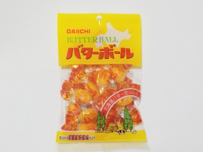
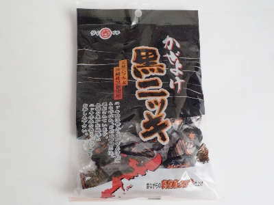
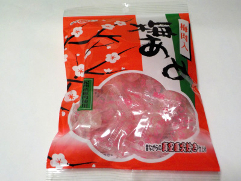
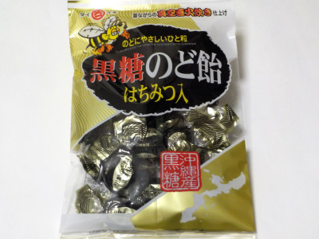

岐阜県大垣市浅中3丁目134-1
更新日 : 2026/04/17

最近バター飴もバタースカッチも食べていないなと思い手に取りました。
期待していた甘いバターでした。90g入った飴が108円は安くていいな。
更新日 : 2024/08/31

ニッキだけだと辛いし、黒糖だけだと甘いです。両方入れて丁度中間的な飴だと思いました。
味がマイルドで食べやすかったです。
更新日 : 2023/11/02

砂糖甘い梅飴です。（梅味もあります。）
このシンプルな砂糖味が、糖分補給して体を癒してる感じがして好きです。
なので、糖質0とかカロリー0の商品はほとんど買わないです。
更新日 : 2023/10/04

メントール味が一番強かったかな。2番が黒糖、3番が蜂蜜味です。
メントールあると、のど飴っぽい感じがしますね。メントールのスッキリ感と、黒糖のコクで複雑な味がしました。
黒糖のど飴系ではよくある感じの商品だと思いました。
百均で販売してて、買い求めやすかったです。
【おいしいものを食べよう。】【たくさん寝よう。】
【ソロ活をしよう!】【季節感のあることをしよう。】【動画視聴はほどほどに。】【当サイトの全てのコンテンツは無断転載禁止です。】